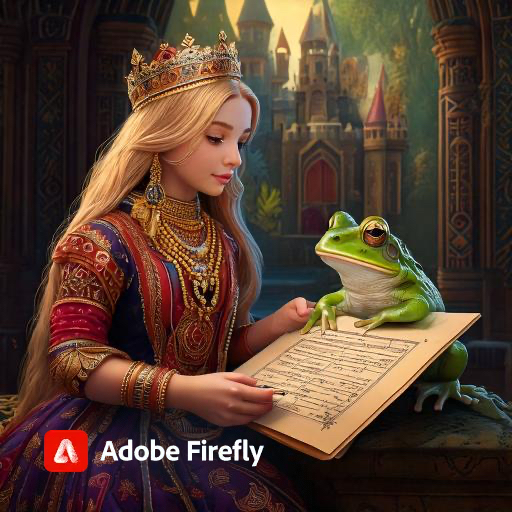
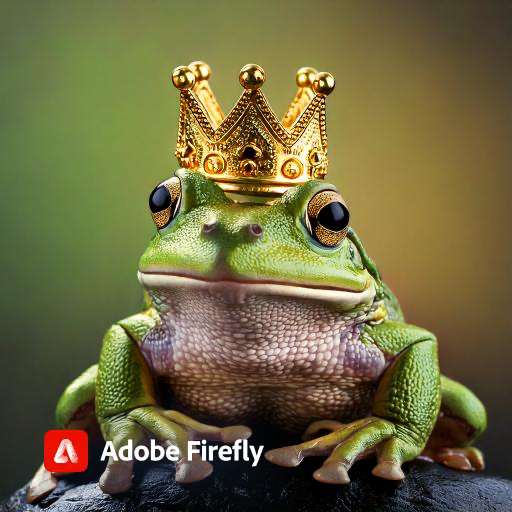

Ses eklemek için HTML yapısında `audio` elementi kullanabilirsiniz. Aşağıda, her bölüm için ses dosyaları eklenmiş haliyle örnek verilmiştir. Ses dosyalarının yolunu ve formatını düzenleyerek kendi dosyalarınızı ekleyebilirsiniz.
```html
Masal Örneği
Bölüm 1: Kayıp Altın Top
Bir zamanlar, güzel bir prenses bir krallıkta yaşıyordu...
Bölüm 1'i dinle:
Bölüm 2: Sözleşme

Prenses, çaresiz kaldığı için kurbağanın teklifini kabul etti...
Bölüm 2'yi dinle:
Bölüm 3: Dönüşüm

Bir akşam, prenses yine göletin kenarında otururken, kurbağa yanına geldi...
Bölüm 3'ü dinle:
Bölüm 4: Mutlu Son
Prenses, kurbağayı öptüğünde, birden kurbağa muhteşem bir prens haline dönüştü...
Bölüm 4'ü dinle:
```
Bu şekilde, her bölümde ses çalma özelliği eklenmiş olacaktır. Ses dosyalarını `"audio/bolum1.mp3"` gibi belirtilen yerlerde kendi dosyalarınızla değiştirmeyi unutmayın.